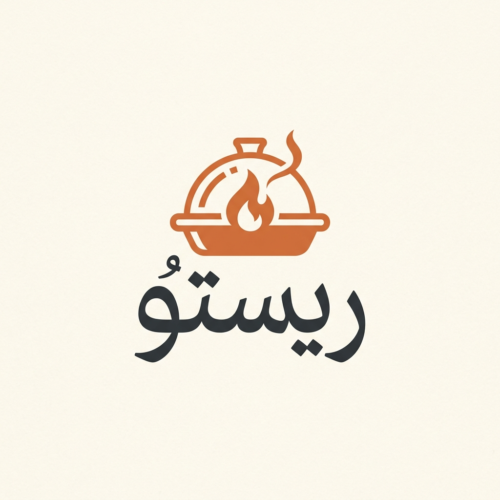
نظام الطلب المباشر وإدارة المطاعم الفاخرة
دليلك المتكامل لاستكشاف منظومة ريستو: تجربة العميل عبر الهاتف المحمول، بوابة كابتن الديليفري الذكية، ولوحة تحكم العمليات المركزية للمطبخ والمبيعات.
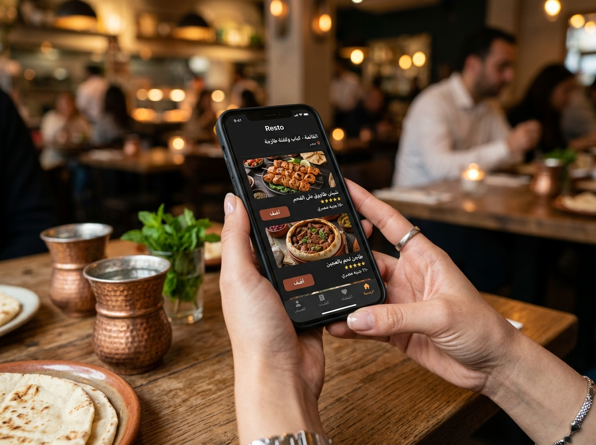
صُممت منظومة ريستو لتمنح صاحب المطعم سيطرة تامة على قنوات البيع وعمليات التشغيل اليومية:
بدلاً من دفع ما بين 15% إلى 25% عمولة لكل طلب لتطبيقات التوصيل الوسيطة، يمنحك ريستو قناة طلب رقمية مباشرة 100% خاصة باسم وهوية مطعمك.
بمجرد إتمام العميل للطلب، يظهر فورياً على شاشة المطبخ في لوحة التحكم، ويتم إسناد كابتن التوصيل بضغطة زر دون اتصالات هاتفية مشتتة.
امتلك بيانات عملائك وتفضيلاتهم وسجل طلباتهم، واستهدفهم بكوبونات وعروض أسبوعية مخصصة تشجعهم على تكرار الطلب.
تجربة استعراض بصرية تأخذ العميل في رحلة شهية عبر أطباق مطعمك الغنية:
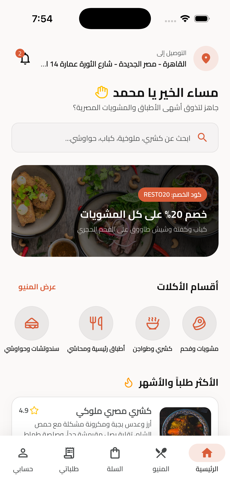
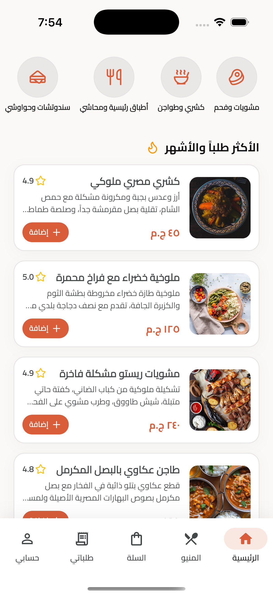
تصنيفات واضحة تناسب طبيعة المطعم (مشويات وفحم، كشري وطواجن فخار، أطباق رئيسية ومحاشي، سندوتشات وحواوشي) مع أيقونات معبرة تتيح الوصول للصنف المطلوب بثوانٍ معدودة.
عرض احترافي لتفاصيل كل طبق متضمناً السعرات الحرارية المحسوبة بدقة (مثل 580 سعرة)، ووقت التجهيز المتوقع (مثل 15 دقيقة)، ومكونات الصنف لتعزيز ثقة العميل.
محرك بحث سلس للأطباق والمكونات، مع بانر علوي ديناميكي يعرض كود الخصم الأسبوعي الفعال (RESTO20) لتشجيع العميل على رفع قيمة سلة الشراء.
مرونة كاملة بين التوصيل المنزلي والاستلام من الفرع مع متابعة دقيقة لمراحل الطهي:
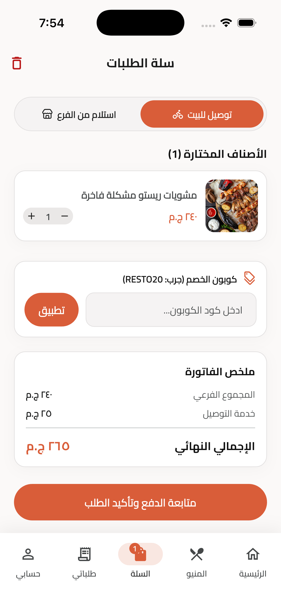
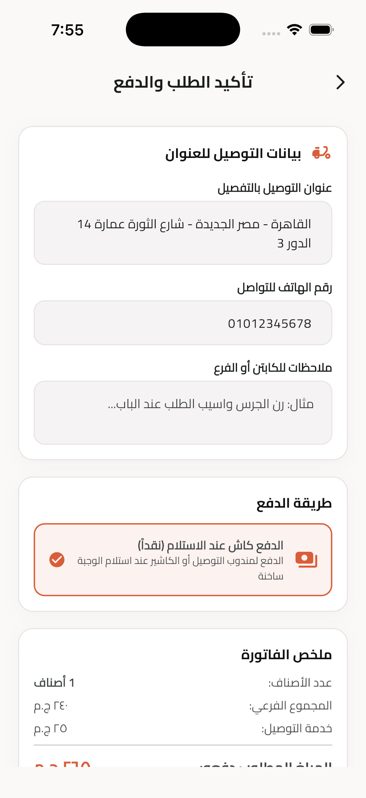
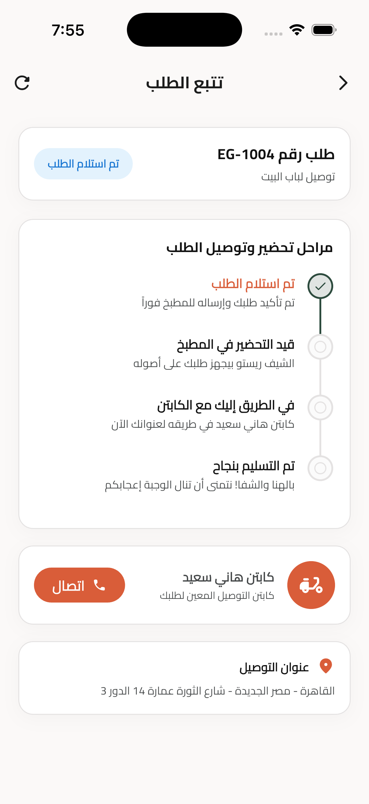
التحكم في كميات الأصناف بسهولة، إضافة كود الخصم (RESTO20) مع خصم فوري ومباشر، والتبديل السلس بين توصيل للمنزل أو استلام من الفرع.
تحديد العنوان المفصل ورقم الهاتف للتواصل، مع مساحة لكتابة تعليمات مخصصة للكابتن أو الشيف (مثل: رن الجرس واترك الطلب)، وخيار الدفع كاش المفضل في السوق المصري.
مخطط زمني واضح من 4 مراحل: (تم استلام الطلب ➔ قيد التحضير في المطبخ ➔ في الطريق مع الكابتن ➔ تم التسليم بنجاح)، مع بطاقة تعريفية بكابتن التوصيل وزر اتصال مباشر.
واجهة عملية صُممت خصيصاً لبيئة الحركة السريعة للكباتن دون أي خطوات معقدة:
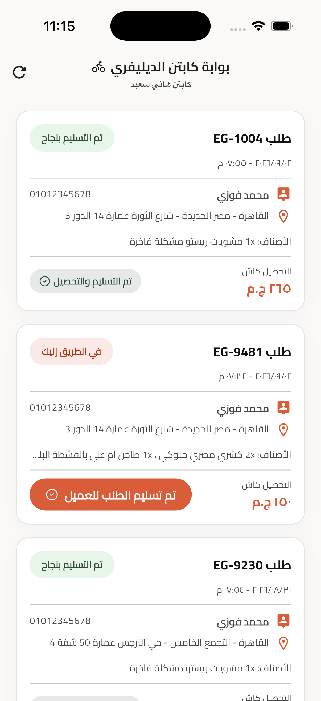
يفتح الكابتن التطبيق ليجد الطلبات التي أسندتها له إدارة المطبخ مرتبة بحسب الأولوية، مع بيان رقم الطلب وزمن الاستلام.
تظهر بيانات العنوان بدقة (المدينة، الحي، اسم الشارع، رقم العمارة والدور) مع رقم هاتف العميل للتواصل الفوري، ومبلغ التحصيل المطلوب بالجنيه المصري (مثال: 150 ج.م).
زر تشغيل مباشر وواضح: "تم تسليم الطلب للعميل". بمجرد الضغط عليه، يتحول الطلب في لوحة تحكم الإدارة إلى مكتمل وتصل رسالة فورية للعميل بالاستلام.
شاشة قيادة موحدة تمنح مدير المطعم رؤية بانورامية حية لكل ما يدور داخل الفرع لحظة بلحظة:
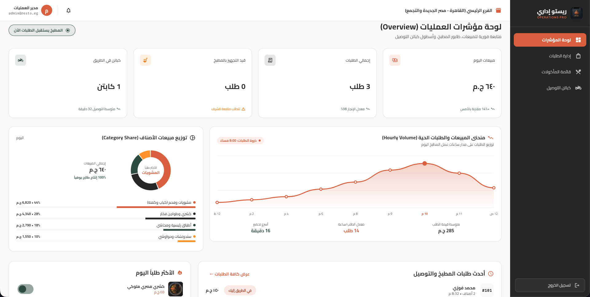
جدول تفاعلي موحد يتيح لمدير الفرع متابعة تفاصيل الطلبات وإجراءات التسليم للكباتن:
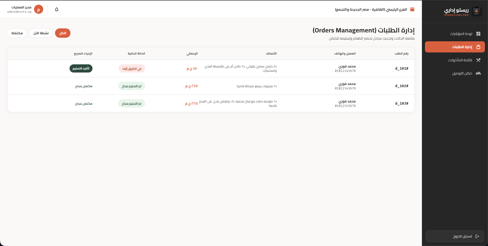
التبديل الفوري بين (كل الطلبات)، (الطلبات النشطة الآن)، و(الطلبات المكتملة) لتقليل الضغط على مسؤولي الكاشير والمطبخ.
عرض الأصناف المطلوبة بدقة (مثل: كشري ملوكي، مشويات مشكلة، طاجن أم علي) مع هاتف العميل ومجموع الفاتورة الإجمالي.
إمكانية تأكيد التسليم أو تحديث مرحلة الطلب مباشرة من الجدول دون الحاجة لفتح صفحات تفصيلية جانبية.
أدوات إدارية تحمي سمعة مطعمك وتمنع طلب أي وجبة نفدت مكوناتها من المطبخ:
زر تبديل لحظي (متوفر الآن / غير متوفر) لكل صنف في القائمة؛ بمجرد إيقافه يختفي فورياً من تطبيق العميل لتفادي الإحراج.
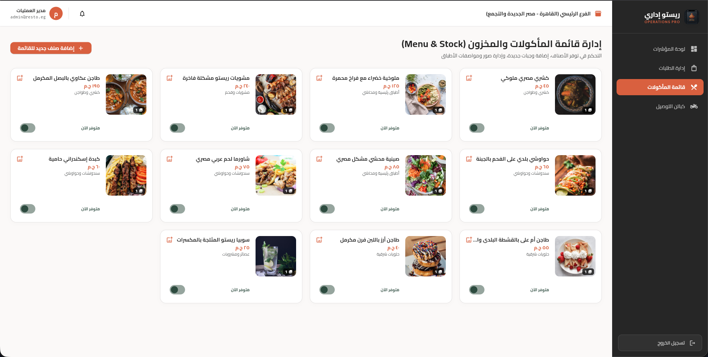
متابعة حالة كل سائق (في طريق التوصيل، متاح للطلب القادم، استراحة)، مع رصد تقييمات العملاء وعدد الطلبات المنجزة يومياً.
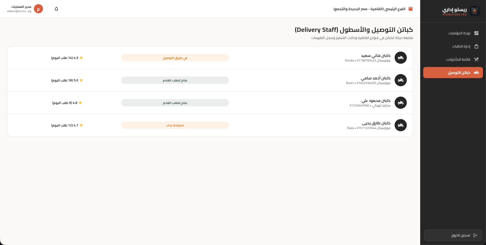
انسيابية تامة في تدفق البيانات بين العميل وإدارة المطبخ والكابتن دون أي فجوات:
تصفح الوجبات، إضافة تعليمات الشيف، تطبيق كود الخصم (RESTO20)، واختيار طريقة التوصيل أو الاستلام.
يظهر الطلب فورياً في طابور المطبخ، يبدأ الشيف التجهيز، ويتم إسناد كابتن التوصيل المتاح بضغطة زر واحدة.
يستلم السائق الطلب ساخناً، يطّلع على العنوان وهاتف العميل، ويغير الحالة إلى "في الطريق" لتحديث العميل.
تسليم الوجبة، تحصيل الكاش، تقييم التجربة في التطبيق، وإمكانية إعادة الطلب بضغطة واحدة في المرات القادمة.
قناة اتصال مباشرة تستقبل آراء العملاء وتعالجها فورياً لحماية سمعة مطعمك.
لا نطلب منك الاعتماد على الكلمات؛ يمكنك تجربة النظام بنفسك عملياً الآن عبر الرابط التجريبي التفاعلي. جرب الطلب كعميل، استلم الطلب في المطبخ، وقم بتوصيله ككابتن.
استعرض دليل الديمو المرفق للتعرف على السيناريو النموذجي لتجربة كافة خصائص النظام خطوة بخطوة.